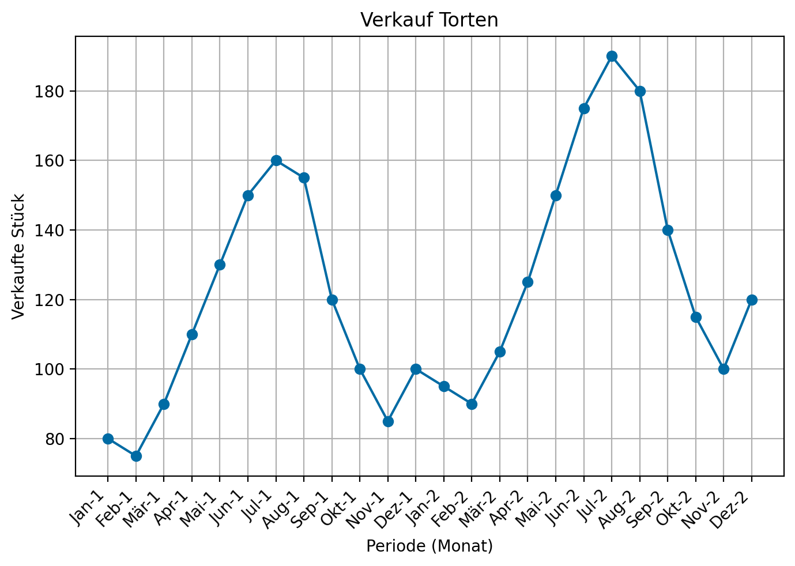
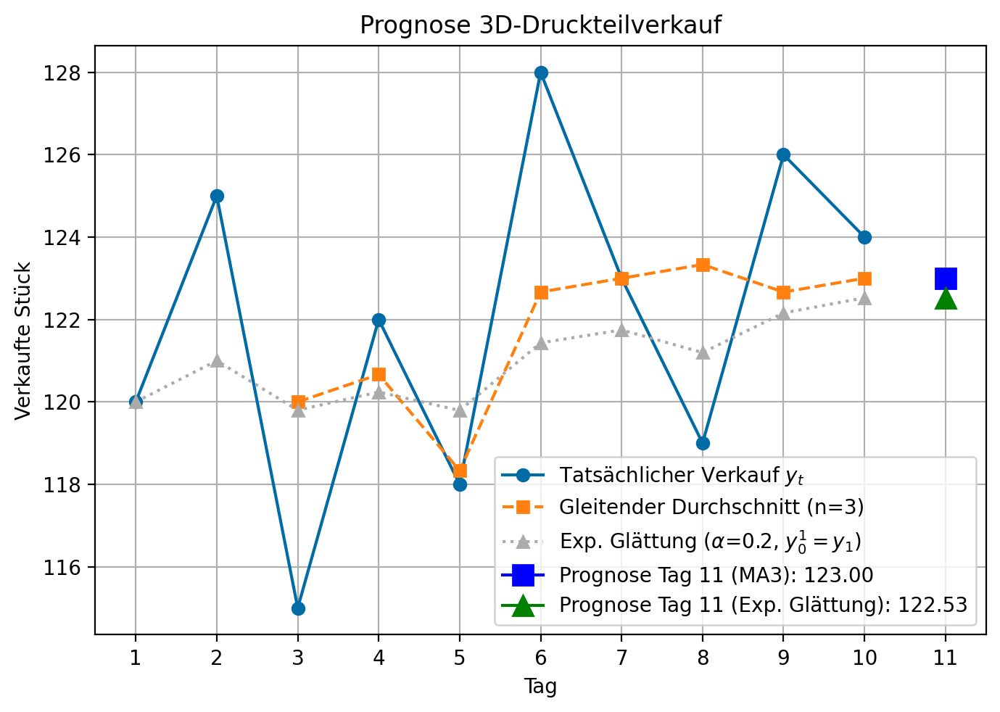

Übung 01
Prognosen und Exponentielles Glätten
Aufgabe 1: Zerlegung einer Zeitreihe
Eine traditionsreiche Manufaktur aus Essen möchte den Verkauf ihrer berühmten Torten besser verstehen, um Zutatenbestellungen und Personalplanung zu optimieren. Die Verkaufszahlen der letzten zwei Jahre (in Stück pro Monat) sind wie folgt:
| Monat | Jahr 1 | Jahr 2 |
|---|---|---|
| Januar | 80 | 95 |
| Februar | 75 | 90 |
| März | 90 | 105 |
| April | 110 | 125 |
| Mai | 130 | 150 |
| Juni | 150 | 175 |
| Juli | 160 | 190 |
| August | 155 | 180 |
| September | 120 | 140 |
| Oktober | 100 | 115 |
| November | 85 | 100 |
| Dezember | 100 | 120 |
Ihre Aufgaben:
- Stellen Sie die Zeitreihe grafisch dar (eine einfache Skizze auf Papier genügt).
- Beschreiben Sie die Hauptkomponenten (Trend, Saison, Zyklus, irreguläre Schwankungen), die Sie in den Verkaufszahlen vermuten. Wie würden Sie diese qualitativ charakterisieren? (z.B. steigender Trend, saisonale Spitzen im Sommer und zu Weihnachten).
- Skizzieren Sie, wie Sie vorgehen würden, um die Trend- und Saisonkomponenten grob zu schätzen, basierend auf den im Skript vorgestellten Ideen.
Lösungshinweise:
Qualitative Beschreibung der Komponenten: - Trend (T): Es scheint einen ansteigenden Trend zu geben, da die Verkäufe im zweiten Jahr generell höher sind als im ersten. - Saison (S): Es gibt klare saisonale Schwankungen. Die Verkäufe sind in den Sommermonaten (Juni-August) tendenziell höher. Auch im Frühjahr (z.B. April/Mai) und im Dezember (Weihnachtsgeschäft) gibt es Spitzen. Die geringsten Verkäufe sind zu Jahresbeginn. - Zyklus (C): Mit nur zwei Jahren Daten ist es schwierig, eine mittelfristige zyklische Komponente (z.B. Konjunkturzyklen) zuverlässig zu identifizieren. - Irreguläre Schwankungen (I): Es gibt monatliche Schwankungen, die nicht perfekt durch Trend und Saison erklärt werden können und als zufällige Restschwankungen interpretiert werden.
Für eine quantitative Analyse (optional, nicht von Hand im Detail gefordert): Man könnte z.B. einen gleitenden Durchschnitt berechnen (z.B. 12-Monate MA, zentriert), um die glatte Komponente T+C zu schätzen. Anschließend könnte man die Verhältnisse der Originaldaten zum gleitenden Durchschnitt berechnen (Y/(T+C) = S*I), um saisonale Faktoren S zu isolieren und zu mitteln.
Aufgabe 2: Prognose ohne Trend
Eine 3D-Druck Firma aus Duisburg möchte die Nachfrage nach seinen 3D-Druckteilen für den nächsten Tag vorhersagen, um Überproduktion oder Engpässe zu vermeiden. Er hat die Verkaufszahlen der letzten 10 Tage notiert:
| Tag | Verkaufte 3D-Druckteile (\(y_t\)) |
|---|---|
| 1 | 120 |
| 2 | 125 |
| 3 | 115 |
| 4 | 122 |
| 5 | 118 |
| 6 | 128 |
| 7 | 123 |
| 8 | 119 |
| 9 | 126 |
| 10 | 124 |
Die Firma geht davon aus, dass der Verkauf relativ konstant ist, aber täglichen Schwankungen unterliegt (d.h. kein klarer Trend, konstantes Niveau).
Ihre Aufgaben:
- Berechnen Sie einen gleitenden Durchschnitt der Ordnung \(n=3\) (3-Tage-Linie), um eine Prognose für Tag 11 zu erstellen (\(p_{11}\)). Der Prognosewert für Tag \(t+1\) ist der Durchschnittswert zum Zeitpunkt \(t\).
- Wenden Sie die exponentielle Glättung erster Ordnung an, um eine Prognose für Tag 11 zu erstellen. Verwenden Sie einen Glättungsfaktor \(\alpha = 0.2\). Als Startwert für den geglätteten Wert zum Zeitpunkt \(t=0\) (Prognose für Tag 1, \(p_1\)) nehmen Sie den tatsächlichen Verkauf von Tag 1 (\(y_1\)).
- Welche Prognose erscheint Ihnen intuitiv plausibler? Begründen Sie kurz.
- Berechnen Sie den Prognosefehler mit der mittleren absoluten Abweichung für die letzten 4 Tage für beide Verfahren.
Lösungshinweise:
Tabelle mit 3-Tage gleitendem Durchschnitt:
Verkauf MA3
Tag
1 120 NaN
2 125 NaN
3 115 120.000000
4 122 120.666667
5 118 118.333333
6 128 122.666667
7 123 123.000000
8 119 123.333333
9 126 122.666667
10 124 123.000000
Prognose für Tag 11 (Gleitender Durchschnitt n=3): 123.00
Tabelle mit exponentieller Glättung (alpha=0.2, y_0^(1) = y_1):
Verkauf MA3 ExpGlättung (y_t^(1))
Tag
1 120 NaN 120.000000
2 125 NaN 121.000000
3 115 120.000000 119.800000
4 122 120.666667 120.240000
5 118 118.333333 119.792000
6 128 122.666667 121.433600
7 123 123.000000 121.746880
8 119 123.333333 121.197504
9 126 122.666667 122.158003
10 124 123.000000 122.526403
Prognose für Tag 11 (Exponentielle Glättung, alpha=0.2): 122.53
- Begründung Plausibilität: Der gleitende Durchschnitt (123.00) basiert ausschließlich auf den letzten drei Beobachtungen und gewichtet diese gleich. Die exponentielle Glättung (122.62 mit alpha=0.2) berücksichtigt alle vergangenen Beobachtungen, wobei die jüngsten ein höheres Gewicht erhalten. Ein Alpha von 0.2 bedeutet eine relativ starke Glättung, d.h. die Prognose reagiert eher träge auf neue Werte. Beide Prognosen liegen eng beieinander. Wenn man davon ausgeht, dass die letzten Tage sehr repräsentativ für die nahe Zukunft sind und es keine Ausreißer gab, könnte der MA(3) passend sein. Wenn man eine stabilere, stärker geglättete Prognose bevorzugt, die weniger von einzelnen Ausschlägen beeinflusst wird, ist die exponentielle Glättung mit niedrigem Alpha eine gute Wahl.
Aufgabe 3: Prognose mit Trend
Ein aufstrebender YouTuber hat in den letzten 8 Monaten einen stetigen Zuwachs an neuen Abonnenten verzeichnet. Er möchte die Entwicklung für die nächsten zwei Monate prognostizieren, um seine Content-Strategie anzupassen.
| Monat \(t\) | Neue Abonnenten \(y_t\) |
|---|---|
| 1 | 500 |
| 2 | 530 |
| 3 | 520 |
| 4 | 580 |
| 5 | 620 |
| 6 | 670 |
| 7 | 640 |
| 8 | 710 |
Er möchte die Methode der exponentiellen Glättung mit Trendkorrektur verwenden, wie sie im Skript vorgestellt wird. Nutzen Sie einen Glättungsfaktor \(\alpha = 0.3\). Das geschätzte Niveau zum Zeitpunkt \(t=0\) ist \(\widehat{a}_0 = 480\) und der Trend (Steigung) ist \(\widehat{b}_0 = 25\).
Ihre Aufgaben:
- Berechnen Sie die initialen Werte \(y_0^{(1)}\) und \(y_0^{(2)}\).
- Berechnen Sie iterativ \(y_t^{(1)}\), \(y_t^{(2)}\), \(\widehat{a}_t\) und \(\widehat{b}_t\) für die Monate \(t=1\) bis \(t=8\).
- Erstellen Sie eine Prognose für die Anzahl neuer Abonnenten für Monat 9 und Monat 10.
- Berechnen Sie den Prognosefehler mit der mittleren quadratischen Abweichung (MSE) für Monat 7 und Monat 8.
Lösungshinweise:
Abonnentendaten TechTom:
Monat Abonnenten
0 1 500
1 2 530
2 3 520
3 4 580
4 5 620
5 6 670
6 7 640
7 8 710
Initialisierung:
y_0^(1) = 421.67
y_0^(2) = 363.33
2. Iterative Berechnung für t=1 bis 8:
t=0: y1_0=421.67, y2_0=363.33, a_hat_0=480.00, b_hat_0=25.00 (gegeben)
Übersicht der Berechnungen:
t y_t y1_t y2_t a_hat_t b_hat_t
0 1 500 445.17 387.88 502.45 24.55
1 2 530 470.62 412.70 528.53 24.82
2 3 520 485.43 434.52 536.34 21.82
3 4 580 513.80 458.31 569.30 23.78
4 5 620 545.66 484.51 606.81 26.21
5 6 670 582.96 514.05 651.88 29.54
6 7 640 600.07 539.86 660.29 25.81
7 8 710 633.05 567.81 698.29 27.96
Letzte Parameter (t=8):
a_hat_8 = 698.29
b_hat_8 = 27.96
Prognose für Monat 9 (p_8+1): 726.25
Prognose für Monat 10 (p_8+2): 754.21
Formeln:
- Initialisierung:
- \(y_{0}^{(1)}=\widehat{a}_{0}-\widehat{b}_{0} \cdot \frac{1-\alpha}{\alpha}\)
- \(y_{0}^{(2)}=\widehat{a}_{0}-2 \cdot \widehat{b}_{0} \cdot \frac{1-\alpha}{\alpha}\)
- Aktualisierung der gleitenden Durchschnitte (für \(t=1, \dots, 8\)):
- \(y_{t}^{(1)}=\alpha \cdot y_{t}+(1-\alpha) \cdot y_{t-1}^{(1)}\)
- \(y_{t}^{(2)}=\alpha \cdot y_{t}^{(1)}+(1-\alpha) \cdot y_{t-1}^{(2)}\)
- Aktualisierung der Parameter der Trendgeraden (für \(t=1, \dots, 8\)):
- \(\widehat{a}_{t}=2 \cdot y_{t}^{(1)}-y_{t}^{(2)}\)
- \(\widehat{b}_{t}=\frac{\alpha}{1-\alpha} \cdot\left(y_{t}^{(1)}-y_{t}^{(2)}\right)\)
- Prognosewert (basierend auf Werten von \(t=8\)):
- \(p_{8+i}=\widehat{a}_{8}+\widehat{b}_{8} \cdot i\)